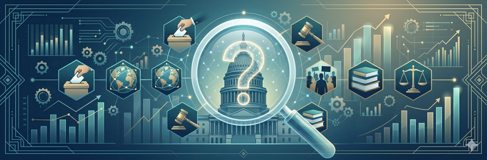

2 Research and Data: The Basics
This chapter seeks to accomplish two major tasks. First, Section 2.1 explains the nuts and bolts of the social science research process. It provides a bit of a “whirlwind tour” of how research analysts get from a substantive research question about a political phenomenon to an empirical, quantitative analysis of the topic. Readers who want more detail on these topics can consult King, Keohane, and Verba (2021) and Brady and Collier (2010).
Second, Section 2.2 covers the basic building blocks of understanding and analyzing data and the variables within the data. This section will cover some concrete RStudio tasks, including methods of importing data for analysis in RStudio and understanding key characteristics of the data and variables.
2.1 Social Science Research
Political science research falls within the broader social science research umbrella that contains shared principles for explaining phenonema. Additional social science disciplines include economics, sociology, and psychology. The social science research approach centers on both substance and method.
By substance, I mean that social scientists are focused on describing and explaining phenomena, outcomes, and processes. Broadly conceived, we want to “understand how the world works.” Social scientists seek to attain explanations of certain quantities and effects that were either previously unknown or previously disputed. This is why all research begins with a question, usually centering on “Why?” Thus, perhaps the core mission for social scientists is to create and disseminate new knowledge about a phenomenon of interest. Social scientists use theory — a comprehensive explanation for a phenomena (see Section 2.1.3) — as currency for engaging in discourse with other social scientists.
A large part of theory building and knowledge accumulation centers on scholarly disagreement: All research is essentially a response, a dispute, or a disagreement with prior research. Researchers contribute new knowledge in the context of prior knowledge — attaining knowledge is fundamentally a cumulative process. This logic informs another critical component at the heart of knowledge creation: Inference, or the discovery of previously “unknown facts” based on “known facts” (see King, Keohane, and Verba 2021). Inference is at the heart of both substance and method.
By method, I mean the set of procedures and tools social scientists use to analyze, evaluate, and test social science explanations, theories, and hypotheses. Many students are likely aware of the folk definition of a hypothesis as an “educated guess.” A social science research hypothesis is more than just a guess, of course. Most hypotheses represent a statement about “cause and effect.” What is the effect or impact of factor \(x\) on factor \(y\)? The theory one brings to bear for explaining a phenomenon implies the hypothesis. “Hypothesis testing” centers on using methods — means of analyzing data — to evaluate whether a hypothesis is right or wrong. Does \(x\) influence \(y\) or doesn’t it? Method includes both a “research design” that can objectively render a verdict on the hypothesis and “data analysis and statistics” that carries out that plan.
Importantly, and bringing it back to substance, data analysis and statistics are means to substantive ends, which include answering research questions, creating new knowledge, evaluating hypotheses, and building theory.
Data analysis and statistics are at the heart of this book, of course. The process I have been describing is empirical research, which seeks to explain “how stuff actually works.” In political science, empirical research is often contrasted with normative research, which focuses “how stuff should work.” Normative queries in political science are associated with political philosophy and is sometimes referred to as “normative political theory.” In contrast, the type of theory described in this chapter is “empirically-oriented theory.” Empirical = “is,” normative = “ought.”
Empirical research includes both quantitative and qualitative analysis. This book centers on quantitative analysis, which involves the use of large amounts of data that can be examined and summarized using data analysis and statistics. Qualitative research includes case studies of a select number of observations (e.g., comparing countries or an in-depth examination of a particular country), interviews with important players in a particular political setting, and “process-tracing” to understand changes over time in a particular context or for an observation. Quantitative analysis involves analysis of large amounts of data, while qualitative analysis involves analysis of small, select amounts of data. Both approaches are widely used in political science research.
A key principle of quantitative analysis and statistics is generalization, which means making very broad conclusions that have application to the population we are trying to explain. For example, in explanations of how people vote in elections, we want to generate explanations that apply as much as possible to all voters in the population. Generalization allows one to make broad-based conclusions such as, “When voting for president, voters are highly reliant on their party identification.” While that conclusion may not apply to every single voter, it applies generally to many voters and/or the “typical” voter. Generalization is also referred to as “external validity,” i.e., how representative of the population a finding is.
For example, when confronted with such a generalization, someone might say, “Well that certainly does not apply to me — I am a true independent voter and vote for both Democrats and Republicans.” Someone may also bring up members of their family who do this. This person may very well be correct — perhaps this generalization does indeed not apply to him or her. They may be an exception to an otherwise generally applicable “rule.” Social scientists will sometimes refer to such exceptions as “anecdotal evidence” that goes against a particular generalization. But the key aspect of a generalization is that it applies to substantially more observations in the population than it does not apply to. A generalization is a representation of reality as opposed to a pure reflection of reality.
“Statistics” provides the vehicle for engaging in quantitative data analysis and making generalizations. For now, think of statistics as a means of: (1) describing variables (in terms of central tendency and dispersion) and associations between variables (at the center of Chapter 6); and (2) making inferences about such descriptions and associations that can apply to the population of interest (at the center of Chapter 7). A key aspect of statistics is defining the reach of a generalization by capturing how much uncertainty surrounds it. How much could we be wrong by? That aspect will be at the center of Chapter 7 and also Chapter 6.
2.1.1 Research Questions

All research begins with a question. Readers are most likely familiar with the phrase “intellectual curiosity.” This trait applies to political and social scientists in how they conduct research. They may read a large group of studies (articles and books) and be curious why scholarship has not addressed a particular topic. Political scientists are always asking, “Why?” That curiosity forms more concrete questions in their minds, which then winnows down to a particular research question at the heart of an article or book. Posing a research question may seem like a simple task, but framing it in the right way takes time and incurs revisions. One’s research question structures the entire research process.
In general, a good research question:
Is “answerable.” Political scientists want to ask questions but also answer them. As discussed above, drawing inferences and answering questions comes with some level of uncertainty that researchers quantify and communicate. But researchers seek to be clear about which side of the question the evidence leans toward; sometimes the evidence is overwhelming thus begging a clear answer while other times the evidence is tepid. Research questions being answerable also relates to the issue of “falsifiability” discussed below in Section 2.1.3. Some questions are answerable with a “yes or no,” while others are answerable with an explanation or theory. I return to this immediately following this list.
Confronts a knowledge gap in the scholarly literature: Since researchers seek to create and disseminate new knowledge about how the world works, research questions should advance a query regarding something we do not know about. This aspect implies that researchers are widely aware of existing knowledge and research on the subject, which is another important part of the research process. Three Rs of being a researcher and asking good research questions: Read, read, and read.
Structures the entire research process: Coming up with a good research question structures the rest of the research process, from theory to hypotheses to research design to data analysis.
Sets up the direction of causality between an “explanatory factor” and an “outcome”: Almost all research examines the effect of some “explanatory factor,” \(x\), on an outcome, \(y\). In my prior voting example, the explanatory factor is one’s party identification and the outcome is vote choice. When we operationalize these concepts (Section 2.1.2) as variables (Section 2.2.1), we refer to \(x\) as the “independent variable” and \(y\) as the “dependent variable” (see Section 2.2.1). Theory and explanation specify the causal nature of this relationship, i.e., \(x\) causes \(y\), or \(x\) \(\rightarrow\) \(y\). Section 2.1.4 will discuss issues of cause-and-effect in greater detail.
Extending these points, the next sections discuss research employing different types of research questions. Each section uses examples from political science research. I will continue to use those examples in the concepts and theory and hypotheses sections.
Research Questions Answerable with “Yes” or “No”: Some questions are answerable with a “yes” or “no.” A good example involves the longstanding debate on “modernization theory” in comparative politics research (see, e.g., Treisman 2020; Przeworski and Limongi 1997). A recurring research question persists throughout this research: Does economic development lead to and sustain democracy? First, related to point #3 above, this research question immediately makes clear what the “explanatory factor” (\(x\)) is and what the outcome (\(y\)) is:
- \(x\) = economic development (how rich or poor a country is)
- \(y\) = democracy (how democratic versus authoritarian a country is)
Second, as mentioned, this research question is answerable with a “yes” or “no.” Those who answer “yes” claim that economic development does indeed influence levels of democracies in regimes around the world. Those who answer “no” would say that economic development does not influence democracy (or what researchers often call a “null effect”). When a research question persists for decades, like this one, another answer often becomes “it depends,” or “yes and no.” This issue relates to “conditional effects” and “scope conditions.” A corollary style of research question reflecting this aspect is When or under what conditions does economic development influence democracy?
Immediate qualities of this research question are its importance and broad scope. The answer to this question matters for political regimes around the world. In fact, some of the best research questions often have very interesting “normative implications” — they matter for what we deem as good or bad outcomes. One can also envision how research on this question will spur lots of future research; scholars will inevitability disagree with prior perspectives, which will spur additional research. This type of research also sets up the remaining steps in the research process. One’s theory derives from the why underlying the researcher’s answer (yes or no) to the research question; e.g., if yes, why does economic development influence democracy? If no, why not? As discussed more below, the question clearly sets up the core hypothesis and also the basics of the empirical analysis. The next type of research question is even more explicit about the use of “why” right in the question.
Research Questions Answerable with an Explanation — Why: Another type of research questions asks “Why?” This type of question is answerable with an explanation, which forms the basis for a theory. An example from American politics voting behavior research is, “Why do voters’ evaluations of economic performance influence presidential vote choice?” One answer, which forms the basis for a theory of “economic voting,” is that voters hold the president — as the sole nationally-elected representative — accountable for a good or bad economy (see, e.g., Fiorina 1981; Kinder and Kiewiet 1981). When the economy is bad, the incumbent (or the incumbent’s party) will do worse in the election than when the economy is good. Like for the prior question style, the question sets up the core causal relationship at the center of the theory hypothesis: Economic performance (or evaluations thereof) is the explanatory factor, \(x\), while presidential vote choice is the outcome, \(y\).
Another type of research question under this umbrella asks why but does not list the explanatory factor. What makes a question like this interesting is that implies a counterintuitive or unexpected behavior, particularly related to existing theory and findings. It sets the foundation for the next type of question I will discuss related to “puzzles.” An example from comparative judicial politics literature is, “Why do politicians support and facilitate judicial independence?” Note that this question implies the outcome (judicial independence) but not the explanatory factor. The theory will need to specify the explanatory factor as a central feature. Note also that “politicians supporting judicial independence” is not exactly a straightforward behavior, particularly in worldwide context. After all, a core judicial power is to contrain political power and keep politicians in check to ensure they are following the law. When courts frustrate politicians’ agendas, politicians should want to reduce judicial independence, not enhance it.
Scholarship on “insurance theory” provide an answer to this research question and also implies the explanatory factor: political competition (see, e.g., Ramseyer 1994; Ginsburg 2003; Staton, Reenock, and Holsinger 2022). As a country becomes more politically competitive, leaders will seek to maintain judicial independence because they perceive their time horizon for holding power is limited; they want to ensure that the courts hold opposition parties to account, including applying laws passed under the current regime against a future one. When competition is low, leaders perceive longer time horizons for holding power and thus feel less of a need to use the courts to enforce current bargains on future opposition governments.
Puzzle-Driven Questions: Political scientists love coming up with puzzles and also solving them. Puzzles are great motivator for a great research question because they involve a sort of “head fake” or contradiction: By all accounts, some outcome should happen under these conditions, but it does not. Puzzles are developed by discovering observations that seem to defy expectations from longstanding theory and findings. An example comes from the aforementioned modernization theory, which explains why economic development (ranging from poor to rich) helps build and sustain democracy. Well-known exceptions to this “rule” are oil-rich countries, which tend to fall into patterns of authoritarianism and corruption. The puzzle centers on why this set of rich countries seems to buck a well-known trend central to modernization theory, and why the source of wealth (oil versus, e.g., trade or industrialization) seem to matter for regime type (Ross 2001).
“Why” versus “How”: As I will discuss in Section 2.1.3, a theory explains why some event or process occurred, why someone holds the attitudes or beliefs they do on a topic, or why an object possesses some characteristic occurs. Why also implies why some event does not occur, why someone holds beliefs on the high or low end of the spectrum, or why an object lacks some characteristic. The why signals that an explanatory factor, \(x\), influences \(y\). Ramping up some, questions that begin with “why” signal subsequent discussion of a causal effect of \(x\) on \(y\). This causal relationship is more fully elaborated by theory.
Questions that begin with how signal discussion of a process as opposed to a causal effect per se of \(x\) on \(y\). This process can take multiple forms, such as “process tracing” to explain the multi-step manner in which one gets \(x\) to \(y\). Process (and “how”) also signals discussion “mediational accounts,” e.g., where some factor \(z\) mediates the relationship between \(x\) and \(y\). Using causal arrow notation: \(x\) \(\rightarrow\) \(z\) \(\rightarrow\) \(y\). Related, “how” typically signals a focus on mechanisms underlying an established effect of \(x\) on \(y\). Section 2.1.3 will elaborate further on this topic.
2.1.2 Concepts
In political and social science research, a concept is a theoretical construct that captures a phenomenon, identity, a “state of the world,” or a characteristic or property of some entity. Concepts are the building blocks of research questions and theories: Concepts central to research are the explanatory factors and the outcome central to a theory. Importantly, concepts contain variation and levels ranging from from low to high; a concept can range from the absence of a characteristic to the presence of a characteristic. Other concepts are more binary in nature, e.g., did one vote in the election or not? In modernization theory example, the two critical concepts are economic development and democracy. Both are large-scale theoretical constructs.
To set up subsequent research processes, one must define the core properties of the concept — a process sometimes referred to as conceptualization. For example, economic development in its simplest terms could be defined as whether a country is rich or poor, which is captured by factors like GDP or unemployment rate. Other key aspects of a mature economic state are industrialization, urbanization, and education: Each signals a move from a rural, agrarian economy to a more advanced manufacturing society, which also helps build a robust middle class and a steady stream of government revenue. One can think of economic development at low (the absence of many of these characteristics) and high ends (the presence of them) of a spectrum (with values in between).
Democracy is often conceptualized as countries having: free and fair elections, the ability of people to form and organize political parties that can seek political power, robust political competition between parties, and elected officials are the people making laws (as opposed to the military).
2.1.3 Theory and Hypotheses
In its broadest terms, a theory is a comprehensive explanation of why \(x\) causes \(y\), including an elaboration on the mechanisms that underlay this effect. A theory also provides a clear answer to a research question. Recall that social science theory discussed in this book is empirically-oriented theory: It seeks to explain why things are the way are, as opposed to how they ought to be, which is the basis of normative theories.
Returning to the example of economic voting, the basic outlines of the theory are that people associate the president with ecomomic performance. The president is the only elected official who represents the entire United States. If people think of the president as a CEO, then they hold the president partly responsible for economic performance. When the economy is strong, voters are more likely to vote for the president (or more generally, the party of the incumbent president). When the economy is weak, they are more likely to vote against the president’s party.
Theories generate hypotheses, which are statements of the effect of an explanatory factor on an outcome. Hypotheses should do three things: (1) be explicit about the population observations or entities over which the hypothesis operates; (2) be explicit about what the explanatory variable is and what the outcome is; and (3) state the direction of the relationship (see Pollock and Edwards 2024). By direction, the hypothesis should state the nature of the effect in substantive terms — how change in the explanatory variable leads to change in the outcome. What is the direction of that change that describes the relationship? Here is an example of a hypothesis that achieves all three goals:
In comparing countries, as economic development increases, degrees of democracy will increase as well.
Here is an example from the economic voting theory:
In comparing voters, those who believe the economy is strong will be more likely vote for the incumbent president’s party than thoes who believe the economy is weak.
Note how these hypotheses achieves each of the three goals of writing hypotheses. The observations or entities are countries in the first hypothesis and individuals (voters) in the second. Each hypothesis makes clear what the explanatory variable is: Economic development in the first, state of the econoomy in the second. Those are the drivers of the outcome, which is democracy in the first and vote choice in the second. Note also how the hypothesis states the direction of the relationship. It discusses how increasing values of economic performance (from weak to strong) lead to an increasing likelihood of voting for the president’s party. The hypothesis is stated in substantive terms — in a way that is intuitive and clear to an average person reading this who may have limited knowledge of the subject. The hypothesess are also written in causal terms.
Another core property of social science theory and hypothesis generation is falsifiability: Theories and hypotheses are required to have the capacity to be proven right or wrong via evidence obtained by empirical observation. This property is a key setup for research design and empirical hypothesis testing. One has to set up theory and hypotheses so the evidence can either support them or reject them. A theory that is not falsifiable is one that can never be proven wrong. Think of conspiracy theories as unfalsifiable: There is no evidence that could be brought to bear that would render such a theory as false. Theories that ultimately rely on the absence of evidence are not falsifiable. Unfalsifiable theories also rely on post hoc rationalization to “rescue” the theory.
Consider the following example of an unfalsifiable claim the aforementioned modernization theory example. Imagine I defined a “sweet spot” of economic development wherein once countries surpass this line, they will remain democratic forever. Imagine some other scholar claims that country A has indeed surpassed this sweet spot but has still not democracratized. The time horizon nature of my claim, though, gives me an out to rescue my theory. I could come back and say, “No, country A has not yet reached this sweet spot. It needs more time. But once it does, it will democratize.” I could seemingly make that point forever if I can argue that country A has yet to surpass this sweet spot.
This sort of logic is a type of “deterministic” or “overdetermined” theory. One outcome must occur, and no capacity exists for the theory being wrong. A deterministic theory is always right and never wrong. But a theory that explains everything explains nothing. In other words, the “explanatory factor,” which is central the theory, is useless and completely uninformative because it is not actually this factor that is truly explaining the outcome. Deterministic explanations are thus the antithesis of causal explanations.
This point underscores that a falsifiable theory or hypothesis needs to possess clear and explicit benchmarks that the scientific community agrees are conditions for rendering the hypothesis as valid or invalid. Recall that the focus on “Why” in Section 2.1.1 emphasized that research and theory should seek to explain why some event does or does not occur or why some object or entity has high or low values of some characteristic or property.
2.1.4 Research Design and Causal Inference
A research design is a plan or blueprint for conducting an empirical analysis capable of testing hypotheses emanating from a theory. Since theory specifies a causal relation between an explanatory factor and an outcome, scholars develop research designs that can maximize causality with respect to the effect of \(x\) on \(y\). As discussed below, some research designs (experiments) are better equipped to generate causal inferences than others. Readers have probably heard the phrase “correlation is not causation.” Correlation is a general association between \(x\) and \(y\) (they “go together”), but causation captures something deeper: The effect of \(x\) on \(y\) when controlling for, or holding constant, alternative influences. A causal inference about the effect of \(x\) on \(y\) rules out all alternative causes.
This causal goal is sometimes called internal validity. Recall that external validity is generalization, so researchers are often attuned to whether causal inferences, which have high internal validity, are also generalizable, or have high external validity as well.
Causality in Theory: Causal inference is rooted in the notion of “counterfactual reasoning” and is often referred to by social scientists as the “potential outcomes framework,” which was formalized by statistician Donald Rubin (1974). A counterfactual is a state of the world that never existed — it is a “what if?” Contrast that with the state of the world did exist, what might colloquially be called a “factual.” If we wanted to generate a genuine causal effect of some explanatory factor, \(x\), on an outcome, \(y\), we would first need to observe that outcome for one value of \(x\) (let’s say the presence of \(x\)) as it actually happened. Then, we would need to re-run history — the counterfactual — by changing only the value \(x\) (the absence of \(x\)) and then observe \(y\) under this alternative state of the world. When we rerun history in the counterfactual, every aspect of the process remains the same, or is held constant, except for the value \(x\) (which is changed to the absence of \(x\)). That is the key to defining a causal inference in theory.
If we define \(y_i^O\) as the value of outcome for a particular observation, \(i\), in the observed state of the world (the “O” superscript is for “observed”) and \(y_i^C\) as the value of the outcome under the counterfactual, then we can define the causal effect of \(x\) on \(y\) as:
Causal effect = \(y_i^O - y_i^C\)
Scholars who apply the logic of causal inference often define \(x\) as the treatment factor. As discussed below, this is analogous language used in experiments. In causal inference logic (and also experiments), the treatment factor is the explanatory variable, \(x\). The presence of this factor or characteristic (e.g., \(x=1\)) is actually called the “treatment,” whereas the absence of it (e.g., \(x=0\)) is called the “control.” We want to observe whether varying this treatment factor (from absence to presence) alters the outcome, \(y\).
A classic example involves a person (we will call her Lucy) with a headache. Lucy takes two ibuprofen tablets and reports that her headache is gone one hour later. Did the ibuprofen actually cause her headache to go away? How would we actually know? Using our causal inference logic, we would have to rerun history — the counterfactual, or alternative state of the world — changing only the treatment factor. Under the counterfactual, Lucy does not take ibuprofen but does everything in the course of her day exactly the same. We would then observe whether Lucy’s headache persisted or went away. Using the notation above, we could define the causal effect of the “treatment” (taking ibuprofen) by comparing two states of the world: headache severity when taking the treatment, \(y_i^O\), versus headache severity when not taking the treatment, \(y_i^C\).
The causal effect would be the same as above: \(y_i^O - y_i^C\).1 In this example, if the treatment “worked” — if ibuprofen caused the headache to go away — the causal effect, or “treatment effect,” would have a negative value: Taking ibuprofen caused decreased headache severity relative to not taking ibuprofen.
Returning to the “economic voting” example, how can we think of a theoretical causal effect of economic performance on presidential vote choice within this framework. Assume that a “booming economy” (low inflation, low unemployment, and a “bull market”) is the treatment, while a “normal” economy (the absence of a booming economy) is the absence of the treatment. Assume that we observe one’s vote choice for an incumbent president, \(y_i^O\), under an observed state of a booming economy (the treatment). How would we know whether economic performance genuinely causes one to have a higher likelihood of voting for the incumbent president? We would have to rerun history changing \(x\) to the absence of a booming economy and then observe the likelihood of voting for the incumbent president (\(y_i^C\)). Once again, the causal/treatment effect would be defined as \(y_i^O - y_i^C\).
Researchers obviously do not have the luxury of rerunning history, yet defining a true causal effect requires observing an outcome under two alternative states of the world, or for two potential outcomes of \(y\). However, we only observe one of those states, with the other being a counterfactual that we never observe. This dilemma is called the “fundamental problem of causal inference”: Estimating causal effects requires data we can never observe or retrieve, i.e., \(y\) under the counterfactual condition. (For an accessible overview of causality and the potential outcomes framework, see Cunningham 2021, Ch. 4.)
This dilemma means that researchers need to “simulate” this counterfactual, potential outcomes logic using observed data. That means researchers will estimate causal effects with some degree of uncertainty. Quantitative empirical researchers employ two general types of research design: Experiments and observational studies. As I will discuss, this book will focus on observational studies but will make occasional reference to experimental studies since they are benchmarks for causal inference. Within observational studies, researchers employ two types of designs: (1) classic statistical analysis where “statistics” attempt to do the heavy lifting on controlling for (or holding constant) alternative causes in efforts to generate causal inferences; and (2) design-based studies (“natural experiments”) that leverage certain features of the data or events in order to mimic how an experiment generates treatment effects with high causal validity. Within this observational data umbrella, this book will focus on the first aspect (statistics-based analysis). (Readers should consult Dunning 2012 for an accessible and comprehensive overview of design-based inference for observational data.)
Experiments: Experiments are the gold standard for causal inference and essentially define what it means to generate causal inferences.
2.2 Data
Where do data come from?
2.2.1 Measurement: From Concepts to Variables
Once researchers have defined the concepts crucial to the theory and hypotheses, they collect data (discussed further in Section 2.2). The core aspect of data collection is the measurement of concepts that are central to one’s theory. Measurement is the process by which concepts are converted into variables that one can analyze empirically and quantitatively. The two core properties of measurement are: Validity and reliability.
Validity: Validity is the extent to which a variable reflects the essence of the concept. When researchers measure concepts, they seek to maximize congruence between the concept and the measure.
2.2.2 Levels of Measurement
2.2.3 Empirical Testing
2.2.4 Importing Data
The more technical specification for deriving the treatment effect involves the following notation (see Cunningham 2021, Ch. 4): \(y_i = D_iy_i^O + (1-D_i)y_i^C\), where \(D_i=1\) if observation \(i\) received the treatment and \(D_i=0\) if observation \(i\) did not receive the treatment. The treatment effect is the difference between the potential outcomes of \(y_i\) when \(D_i=1\) compared to when \(D_i=0\). When \(D_i=1\), \(y_i=y_i^O\) (the outcome under the observed state of the world). When \(D_i=0\), \(y_i=y_i^C\) (the outcome under the counterfactual state of the world). Thus the treatment effect, \(\delta_i\), is: \(\delta_i = y_i^O - y_i^C\).↩︎